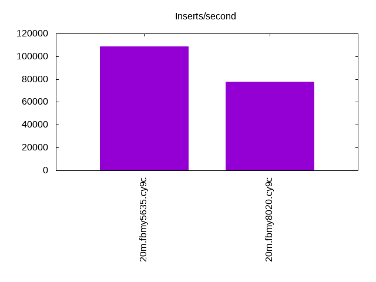
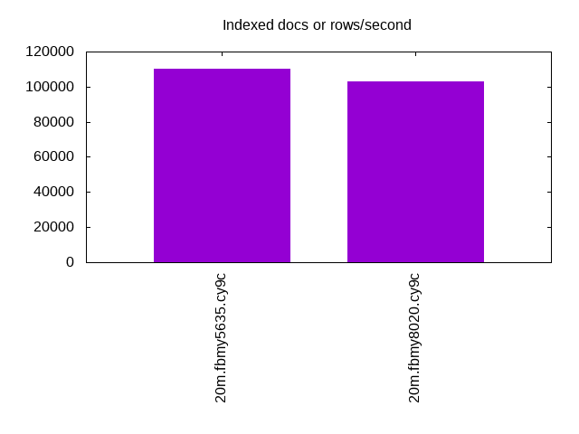
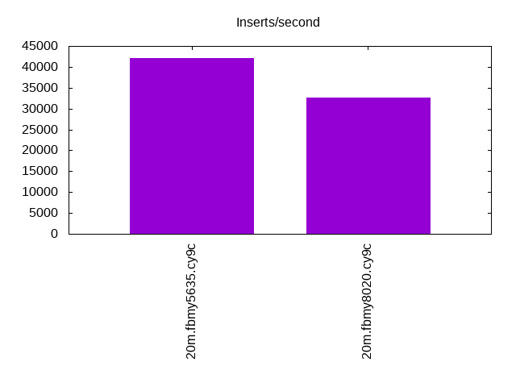
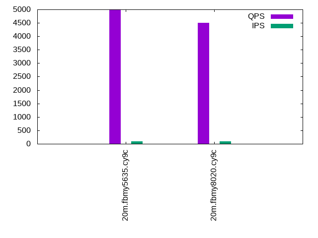
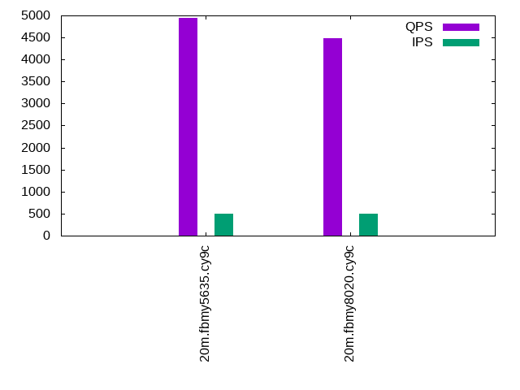
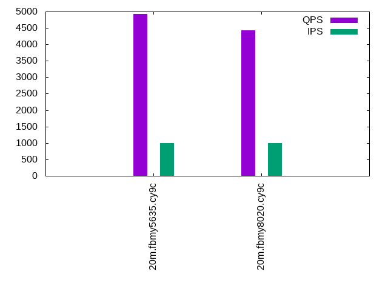

This is a report for the insert benchmark with 20M docs and 1 client(s). It is generated by scripts (bash, awk, sed) and Tufte might not be impressed. An overview of the insert benchmark is here and a short update is here. Below, by DBMS, I mean DBMS+version.config. An example is my8020.c10b40 where my means MySQL, 8020 is version 8.0.20 and c10b40 is the name for the configuration file.
The test server is an Intel NUC with 4 cores, 16G RAM and a Samsung 970 EVO. More details are here. Clients and the DBMS share one server. The per-database configs are in the per-database subdirectories here.
The tested DBMS are:
The numbers are inserts/s for l.i0 and l.i1, indexed docs (or rows) /s for l.x and queries/s for q*.2. The values are the average rate over the entire test for inserts (IPS) and queries (QPS). The range of values for IPS and QPS is split into 3 parts: bottom 25%, middle 50%, top 25%. Values in the bottom 25% have a red background, values in the top 25% have a green background and values in the middle have no color. A gray background is used for values that can be ignored because the DBMS did not sustain the target insert rate. Red backgrounds are not used when the minimum value is within 80% of the max value.
| dbms | l.i0 | l.x | l.i1 | q100.1 | q500.1 | q1000.1 |
|---|---|---|---|---|---|---|
| 20m.fbmy5635.cy9c | 108696 | 110440 | 42017 | 4974 | 4951 | 4917 |
| 20m.fbmy8020.cy9c | 77519 | 103077 | 32733 | 4503 | 4478 | 4435 |
This lists the average rate of inserts/s for the tests that do inserts concurrent with queries. For such tests the query rate is listed in the table above. The read+write tests are setup so that the insert rate should match the target rate every second. Cells that are not at least 95% of the target have a red background to indicate a failure to satisfy the target.
| dbms | q100.1 | q500.1 | q1000.1 |
|---|---|---|---|
| fbmy5635.cy9c | 100 | 500 | 999 |
| fbmy8020.cy9c | 100 | 500 | 999 |
| target | 100 | 500 | 1000 |
l.i0: load without secondary indexes. Graphs for performance per 1-second interval are here.
Average throughput:
Insert response time histogram: each cell has the percentage of responses that take <= the time in the header and max is the max response time in seconds. For the max column values in the top 25% of the range have a red background and in the bottom 25% of the range have a green background. The red background is not used when the min value is within 80% of the max value.
| dbms | 256us | 1ms | 4ms | 16ms | 64ms | 256ms | 1s | 4s | 16s | gt | max |
|---|---|---|---|---|---|---|---|---|---|---|---|
| fbmy5635.cy9c | 98.391 | 1.559 | 0.046 | 0.001 | 0.003 | 0.113 | |||||
| fbmy8020.cy9c | 99.823 | 0.159 | 0.017 | 0.001 | 0.117 |
Performance metrics for the DBMS listed above. Some are normalized by throughput, others are not. Legend for results is here.
ips qps rps rmbps wps wmbps rpq rkbpq wpi wkbpi csps cpups cspq cpupq dbgb1 dbgb2 rss maxop p50 p99 tag 108696 0 0 0.0 43.9 18.5 0.000 0.000 0.000 0.174 11150 48.2 0.103 18 0.7 1.8 0.2 0.113 110882 94499 20m.fbmy5635.cy9c 77519 0 0 0.0 43.2 15.1 0.000 0.000 0.001 0.200 8293 42.9 0.107 22 0.7 1.9 0.6 0.117 78652 67626 20m.fbmy8020.cy9c
l.x: create secondary indexes.
Average throughput:
Performance metrics for the DBMS listed above. Some are normalized by throughput, others are not. Legend for results is here.
ips qps rps rmbps wps wmbps rpq rkbpq wpi wkbpi csps cpups cspq cpupq dbgb1 dbgb2 rss maxop p50 p99 tag 110440 0 0 0.0 27.5 16.8 0.000 0.000 0.000 0.155 747 25.1 0.007 9 1.5 2.5 1.3 0.016 NA NA 20m.fbmy5635.cy9c 103077 0 0 0.0 25.0 15.7 0.000 0.000 0.000 0.156 886 25.3 0.009 10 1.4 2.6 1.8 0.006 NA NA 20m.fbmy8020.cy9c
l.i1: continue load after secondary indexes created. Graphs for performance per 1-second interval are here.
Average throughput:
Insert response time histogram: each cell has the percentage of responses that take <= the time in the header and max is the max response time in seconds. For the max column values in the top 25% of the range have a red background and in the bottom 25% of the range have a green background. The red background is not used when the min value is within 80% of the max value.
| dbms | 256us | 1ms | 4ms | 16ms | 64ms | 256ms | 1s | 4s | 16s | gt | max |
|---|---|---|---|---|---|---|---|---|---|---|---|
| fbmy5635.cy9c | 8.788 | 91.117 | 0.091 | 0.004 | 0.056 | ||||||
| fbmy8020.cy9c | 99.819 | 0.168 | 0.013 | 0.064 |
Performance metrics for the DBMS listed above. Some are normalized by throughput, others are not. Legend for results is here.
ips qps rps rmbps wps wmbps rpq rkbpq wpi wkbpi csps cpups cspq cpupq dbgb1 dbgb2 rss maxop p50 p99 tag 42017 0 13 1.6 95.1 54.2 0.000 0.038 0.002 1.320 9563 58.0 0.228 55 2.9 4.7 2.1 0.056 41653 34562 20m.fbmy5635.cy9c 32733 0 10 1.2 88.3 51.9 0.000 0.038 0.003 1.624 8242 56.4 0.252 69 2.9 4.8 2.7 0.064 32315 28968 20m.fbmy8020.cy9c
q100.1: range queries with 100 insert/s per client. Graphs for performance per 1-second interval are here.
Average throughput:
Query response time histogram: each cell has the percentage of responses that take <= the time in the header and max is the max response time in seconds. For max values in the top 25% of the range have a red background and in the bottom 25% of the range have a green background. The red background is not used when the min value is within 80% of the max value.
| dbms | 256us | 1ms | 4ms | 16ms | 64ms | 256ms | 1s | 4s | 16s | gt | max |
|---|---|---|---|---|---|---|---|---|---|---|---|
| fbmy5635.cy9c | 98.389 | 1.611 | nonzero | 0.004 | |||||||
| fbmy8020.cy9c | 97.861 | 2.138 | nonzero | nonzero | 0.004 |
Insert response time histogram: each cell has the percentage of responses that take <= the time in the header and max is the max response time in seconds. For max values in the top 25% of the range have a red background and in the bottom 25% of the range have a green background. The red background is not used when the min value is within 80% of the max value.
| dbms | 256us | 1ms | 4ms | 16ms | 64ms | 256ms | 1s | 4s | 16s | gt | max |
|---|---|---|---|---|---|---|---|---|---|---|---|
| fbmy5635.cy9c | 0.083 | 99.896 | 0.021 | 0.004 | |||||||
| fbmy8020.cy9c | 99.875 | 0.125 | 0.008 |
Performance metrics for the DBMS listed above. Some are normalized by throughput, others are not. Legend for results is here.
ips qps rps rmbps wps wmbps rpq rkbpq wpi wkbpi csps cpups cspq cpupq dbgb1 dbgb2 rss maxop p50 p99 tag 100 4974 0 0.0 3.2 0.1 0.000 0.000 0.032 0.944 19123 26.0 3.845 209 2.9 4.7 3.6 0.004 4986 4858 20m.fbmy5635.cy9c 100 4503 0 0.0 3.4 0.1 0.000 0.000 0.034 1.424 17475 27.0 3.881 240 2.9 4.9 4.3 0.004 4507 4411 20m.fbmy8020.cy9c
q500.1: range queries with 500 insert/s per client. Graphs for performance per 1-second interval are here.
Average throughput:
Query response time histogram: each cell has the percentage of responses that take <= the time in the header and max is the max response time in seconds. For max values in the top 25% of the range have a red background and in the bottom 25% of the range have a green background. The red background is not used when the min value is within 80% of the max value.
| dbms | 256us | 1ms | 4ms | 16ms | 64ms | 256ms | 1s | 4s | 16s | gt | max |
|---|---|---|---|---|---|---|---|---|---|---|---|
| fbmy5635.cy9c | 98.107 | 1.892 | 0.001 | nonzero | 0.012 | ||||||
| fbmy8020.cy9c | 97.297 | 2.700 | 0.003 | nonzero | 0.006 |
Insert response time histogram: each cell has the percentage of responses that take <= the time in the header and max is the max response time in seconds. For max values in the top 25% of the range have a red background and in the bottom 25% of the range have a green background. The red background is not used when the min value is within 80% of the max value.
| dbms | 256us | 1ms | 4ms | 16ms | 64ms | 256ms | 1s | 4s | 16s | gt | max |
|---|---|---|---|---|---|---|---|---|---|---|---|
| fbmy5635.cy9c | 0.481 | 99.494 | 0.024 | 0.001 | 0.033 | ||||||
| fbmy8020.cy9c | 99.883 | 0.100 | 0.017 | 0.039 |
Performance metrics for the DBMS listed above. Some are normalized by throughput, others are not. Legend for results is here.
ips qps rps rmbps wps wmbps rpq rkbpq wpi wkbpi csps cpups cspq cpupq dbgb1 dbgb2 rss maxop p50 p99 tag 500 4951 0 0.0 4.1 0.7 0.000 0.000 0.008 1.451 19112 26.5 3.860 214 3.2 3.5 6.1 0.012 4955 4780 20m.fbmy5635.cy9c 500 4478 0 0.0 4.6 1.1 0.000 0.000 0.009 2.240 17472 27.7 3.902 247 3.2 3.6 8.5 0.006 4475 4316 20m.fbmy8020.cy9c
q1000.1: range queries with 1000 insert/s per client. Graphs for performance per 1-second interval are here.
Average throughput:
Query response time histogram: each cell has the percentage of responses that take <= the time in the header and max is the max response time in seconds. For max values in the top 25% of the range have a red background and in the bottom 25% of the range have a green background. The red background is not used when the min value is within 80% of the max value.
| dbms | 256us | 1ms | 4ms | 16ms | 64ms | 256ms | 1s | 4s | 16s | gt | max |
|---|---|---|---|---|---|---|---|---|---|---|---|
| fbmy5635.cy9c | 97.591 | 2.406 | 0.003 | nonzero | 0.013 | ||||||
| fbmy8020.cy9c | 96.292 | 3.701 | 0.007 | nonzero | 0.009 |
Insert response time histogram: each cell has the percentage of responses that take <= the time in the header and max is the max response time in seconds. For max values in the top 25% of the range have a red background and in the bottom 25% of the range have a green background. The red background is not used when the min value is within 80% of the max value.
| dbms | 256us | 1ms | 4ms | 16ms | 64ms | 256ms | 1s | 4s | 16s | gt | max |
|---|---|---|---|---|---|---|---|---|---|---|---|
| fbmy5635.cy9c | 0.565 | 99.392 | 0.042 | 0.001 | 0.033 | ||||||
| fbmy8020.cy9c | 99.865 | 0.115 | 0.021 | 0.039 |
Performance metrics for the DBMS listed above. Some are normalized by throughput, others are not. Legend for results is here.
ips qps rps rmbps wps wmbps rpq rkbpq wpi wkbpi csps cpups cspq cpupq dbgb1 dbgb2 rss maxop p50 p99 tag 999 4917 0 0.0 5.4 1.6 0.000 0.000 0.005 1.677 19106 27.3 3.885 222 3.7 4.9 10.5 0.013 4923 4699 20m.fbmy5635.cy9c 999 4435 4 0.1 6.8 2.6 0.001 0.016 0.007 2.627 17453 28.8 3.935 260 3.6 5.0 10.8 0.009 4443 4235 20m.fbmy8020.cy9c
l.i0: load without secondary indexes
Performance metrics for all DBMS, not just the ones listed above. Some are normalized by throughput, others are not. Legend for results is here.
ips qps rps rmbps wps wmbps rpq rkbpq wpi wkbpi csps cpups cspq cpupq dbgb1 dbgb2 rss maxop p50 p99 tag 108696 0 0 0.0 43.9 18.5 0.000 0.000 0.000 0.174 11150 48.2 0.103 18 0.7 1.8 0.2 0.113 110882 94499 20m.fbmy5635.cy9c 77519 0 0 0.0 43.2 15.1 0.000 0.000 0.001 0.200 8293 42.9 0.107 22 0.7 1.9 0.6 0.117 78652 67626 20m.fbmy8020.cy9c
l.x: create secondary indexes
Performance metrics for all DBMS, not just the ones listed above. Some are normalized by throughput, others are not. Legend for results is here.
ips qps rps rmbps wps wmbps rpq rkbpq wpi wkbpi csps cpups cspq cpupq dbgb1 dbgb2 rss maxop p50 p99 tag 110440 0 0 0.0 27.5 16.8 0.000 0.000 0.000 0.155 747 25.1 0.007 9 1.5 2.5 1.3 0.016 NA NA 20m.fbmy5635.cy9c 103077 0 0 0.0 25.0 15.7 0.000 0.000 0.000 0.156 886 25.3 0.009 10 1.4 2.6 1.8 0.006 NA NA 20m.fbmy8020.cy9c
l.i1: continue load after secondary indexes created
Performance metrics for all DBMS, not just the ones listed above. Some are normalized by throughput, others are not. Legend for results is here.
ips qps rps rmbps wps wmbps rpq rkbpq wpi wkbpi csps cpups cspq cpupq dbgb1 dbgb2 rss maxop p50 p99 tag 42017 0 13 1.6 95.1 54.2 0.000 0.038 0.002 1.320 9563 58.0 0.228 55 2.9 4.7 2.1 0.056 41653 34562 20m.fbmy5635.cy9c 32733 0 10 1.2 88.3 51.9 0.000 0.038 0.003 1.624 8242 56.4 0.252 69 2.9 4.8 2.7 0.064 32315 28968 20m.fbmy8020.cy9c
q100.1: range queries with 100 insert/s per client
Performance metrics for all DBMS, not just the ones listed above. Some are normalized by throughput, others are not. Legend for results is here.
ips qps rps rmbps wps wmbps rpq rkbpq wpi wkbpi csps cpups cspq cpupq dbgb1 dbgb2 rss maxop p50 p99 tag 100 4974 0 0.0 3.2 0.1 0.000 0.000 0.032 0.944 19123 26.0 3.845 209 2.9 4.7 3.6 0.004 4986 4858 20m.fbmy5635.cy9c 100 4503 0 0.0 3.4 0.1 0.000 0.000 0.034 1.424 17475 27.0 3.881 240 2.9 4.9 4.3 0.004 4507 4411 20m.fbmy8020.cy9c
q500.1: range queries with 500 insert/s per client
Performance metrics for all DBMS, not just the ones listed above. Some are normalized by throughput, others are not. Legend for results is here.
ips qps rps rmbps wps wmbps rpq rkbpq wpi wkbpi csps cpups cspq cpupq dbgb1 dbgb2 rss maxop p50 p99 tag 500 4951 0 0.0 4.1 0.7 0.000 0.000 0.008 1.451 19112 26.5 3.860 214 3.2 3.5 6.1 0.012 4955 4780 20m.fbmy5635.cy9c 500 4478 0 0.0 4.6 1.1 0.000 0.000 0.009 2.240 17472 27.7 3.902 247 3.2 3.6 8.5 0.006 4475 4316 20m.fbmy8020.cy9c
q1000.1: range queries with 1000 insert/s per client
Performance metrics for all DBMS, not just the ones listed above. Some are normalized by throughput, others are not. Legend for results is here.
ips qps rps rmbps wps wmbps rpq rkbpq wpi wkbpi csps cpups cspq cpupq dbgb1 dbgb2 rss maxop p50 p99 tag 999 4917 0 0.0 5.4 1.6 0.000 0.000 0.005 1.677 19106 27.3 3.885 222 3.7 4.9 10.5 0.013 4923 4699 20m.fbmy5635.cy9c 999 4435 4 0.1 6.8 2.6 0.001 0.016 0.007 2.627 17453 28.8 3.935 260 3.6 5.0 10.8 0.009 4443 4235 20m.fbmy8020.cy9c
Insert response time histogram
256us 1ms 4ms 16ms 64ms 256ms 1s 4s 16s gt max tag 0.000 98.391 1.559 0.046 0.001 0.003 0.000 0.000 0.000 0.000 0.113 fbmy5635.cy9c 0.000 0.000 99.823 0.159 0.017 0.001 0.000 0.000 0.000 0.000 0.117 fbmy8020.cy9c
TODO - determine whether there is data for create index response time
Insert response time histogram
256us 1ms 4ms 16ms 64ms 256ms 1s 4s 16s gt max tag 0.000 8.788 91.117 0.091 0.004 0.000 0.000 0.000 0.000 0.000 0.056 fbmy5635.cy9c 0.000 0.000 99.819 0.168 0.013 0.000 0.000 0.000 0.000 0.000 0.064 fbmy8020.cy9c
Query response time histogram
256us 1ms 4ms 16ms 64ms 256ms 1s 4s 16s gt max tag 98.389 1.611 nonzero 0.000 0.000 0.000 0.000 0.000 0.000 0.000 0.004 fbmy5635.cy9c 97.861 2.138 nonzero nonzero 0.000 0.000 0.000 0.000 0.000 0.000 0.004 fbmy8020.cy9c
Insert response time histogram
256us 1ms 4ms 16ms 64ms 256ms 1s 4s 16s gt max tag 0.000 0.083 99.896 0.021 0.000 0.000 0.000 0.000 0.000 0.000 0.004 fbmy5635.cy9c 0.000 0.000 99.875 0.125 0.000 0.000 0.000 0.000 0.000 0.000 0.008 fbmy8020.cy9c
Query response time histogram
256us 1ms 4ms 16ms 64ms 256ms 1s 4s 16s gt max tag 98.107 1.892 0.001 nonzero 0.000 0.000 0.000 0.000 0.000 0.000 0.012 fbmy5635.cy9c 97.297 2.700 0.003 nonzero 0.000 0.000 0.000 0.000 0.000 0.000 0.006 fbmy8020.cy9c
Insert response time histogram
256us 1ms 4ms 16ms 64ms 256ms 1s 4s 16s gt max tag 0.000 0.481 99.494 0.024 0.001 0.000 0.000 0.000 0.000 0.000 0.033 fbmy5635.cy9c 0.000 0.000 99.883 0.100 0.017 0.000 0.000 0.000 0.000 0.000 0.039 fbmy8020.cy9c
Query response time histogram
256us 1ms 4ms 16ms 64ms 256ms 1s 4s 16s gt max tag 97.591 2.406 0.003 nonzero 0.000 0.000 0.000 0.000 0.000 0.000 0.013 fbmy5635.cy9c 96.292 3.701 0.007 nonzero 0.000 0.000 0.000 0.000 0.000 0.000 0.009 fbmy8020.cy9c
Insert response time histogram
256us 1ms 4ms 16ms 64ms 256ms 1s 4s 16s gt max tag 0.000 0.565 99.392 0.042 0.001 0.000 0.000 0.000 0.000 0.000 0.033 fbmy5635.cy9c 0.000 0.000 99.865 0.115 0.021 0.000 0.000 0.000 0.000 0.000 0.039 fbmy8020.cy9c